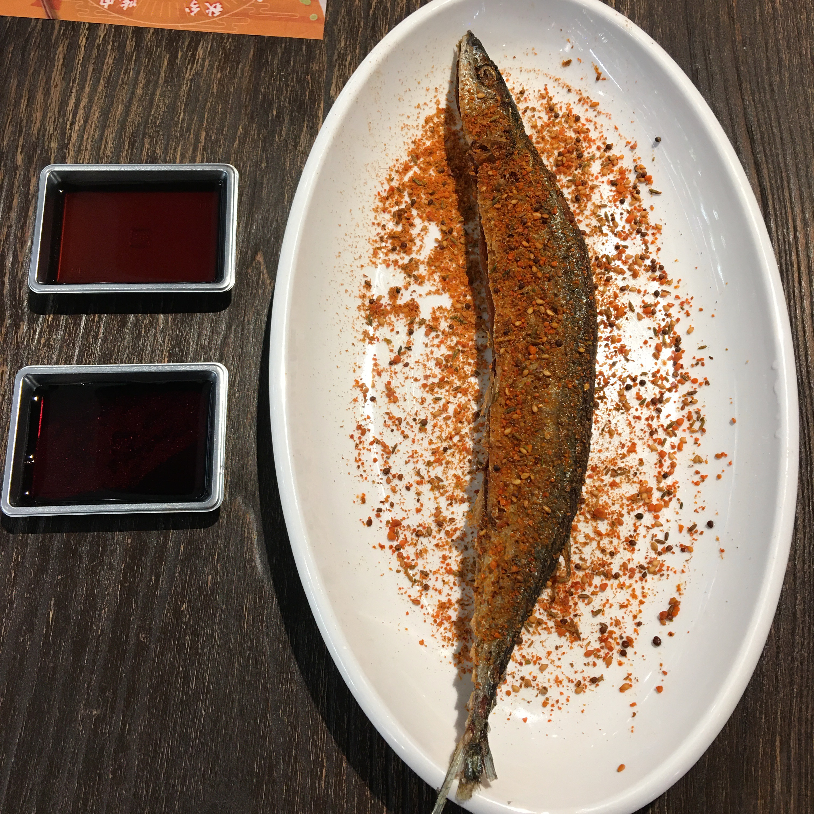
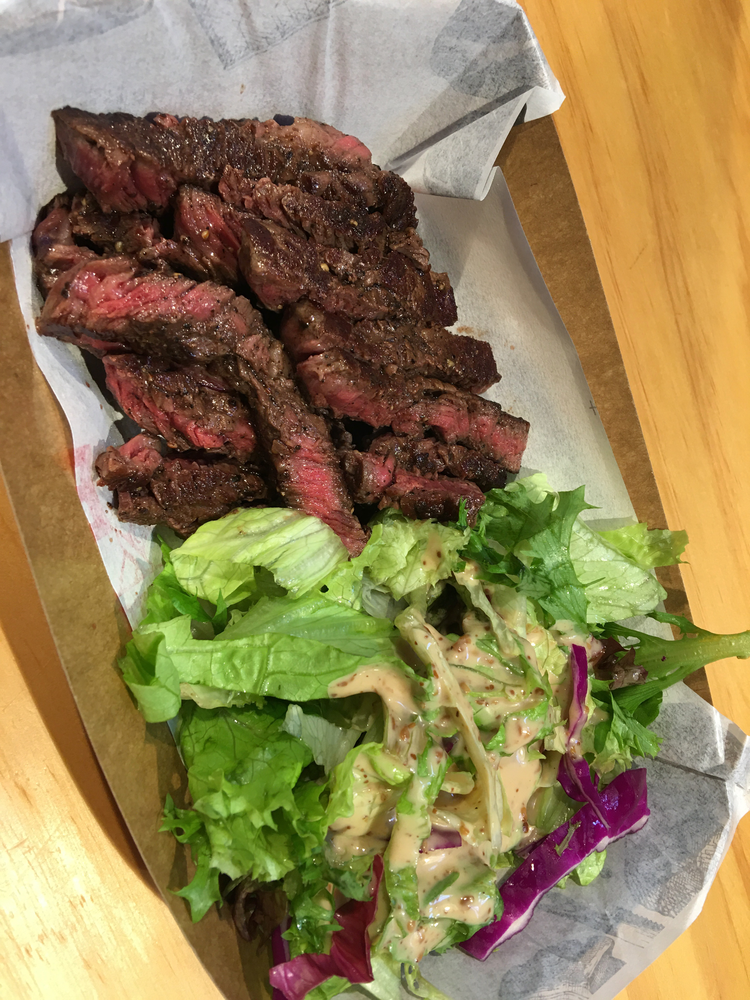

引言
本文起草于在公司的加班的时候，草草完成于公司2020-01-15。
不知不觉，2019年就要结束了，今年发生的事情有很多，有些记录了，有些遗漏了，在2019年快要结束的时候，我想给自己的生活做些总结。准备从生活、工作等几个方面来进行年度总结。
工作
一转眼自己已经从学校毕业了，回想之前寻找工作时候的状态，不禁有些唏嘘，那个时候自己从扬州来到南京，在江宁租了一个月的房子，和女朋友住在一起，陪女朋友复习了半个月，然后自己找工作半个月，每天就只吃面，也不敢有什么大的消费，靠着和老师做项目的4000元以及跟姐姐要钱买iPad Pro的6000元（一波无敌操作，买了又卖掉，亏损了几百元）。
现在回想起来，也不知道如何形容当时的生活，可能性格原因吧，面对什么都没有多大的情绪波动，那个阶段的情绪波动来自找工作的压力以及与女朋友相处，因为找不到满意的工作，因为怀疑自己，因为异地，因为性格，因为鸡毛蒜皮的小事… 倒也称不上灰暗，只是有些焦躁。
好在最后也算是找到了工作吧，印象中两家吧，一家在浦口，包吃住，工资尚可，一家在鼓楼，只是笼统说了一共有多少，浦口的工作环境过于阴暗，遂拒绝了，鼓楼的在网上的评价却不是太好，是个外包，奈何能力和时间有限，就只能选择这个让自己感到那么一点心安。shein倒也是不错的选择，奈何没有能够进入。
工作的情况在2019的中旬也算告一段落了。
随后就是签三方、参与公司的培训之类，过于久远，潦草记之。
不过，也算明白一个道理，有些事情，只有经历了才能看到、了解的更加全面，而生活的很多事情并没有难，也并没有那么简单，实力+运气。
生活
生活方面，情况就贴一些图吧，大意是吃吃喝喝，周游南京，偶尔吵闹，仍需成长。



其他
懒癌，暂无，哈哈哈😂